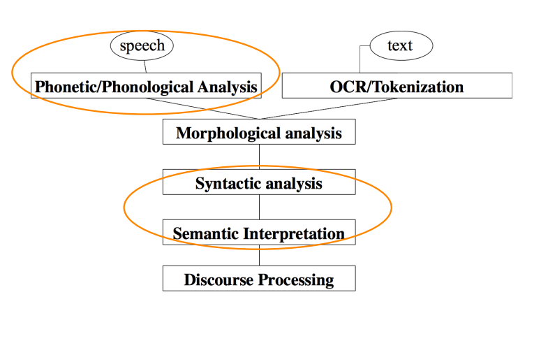
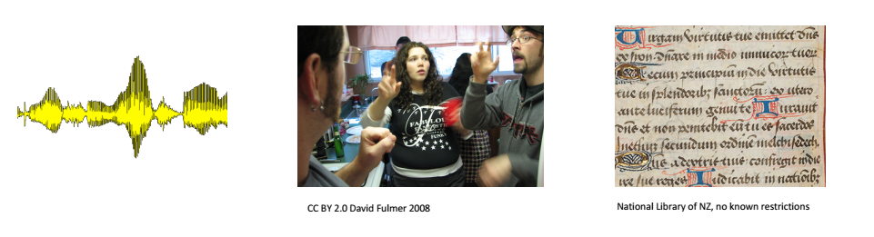
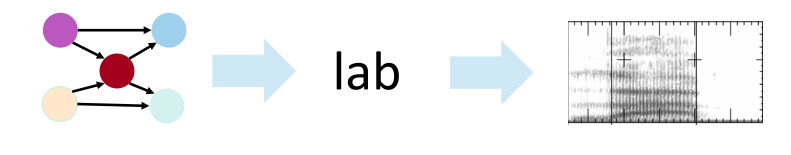
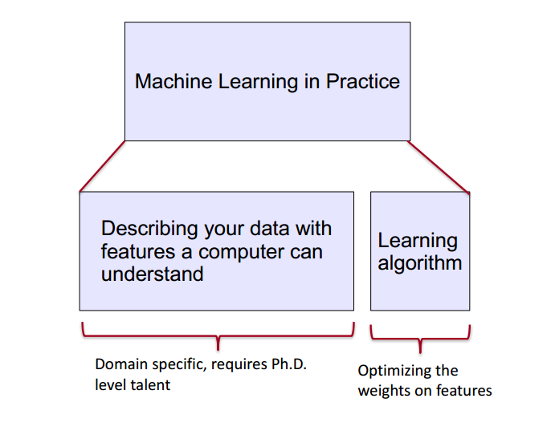
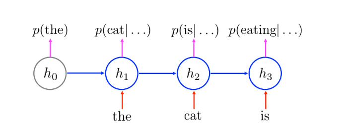
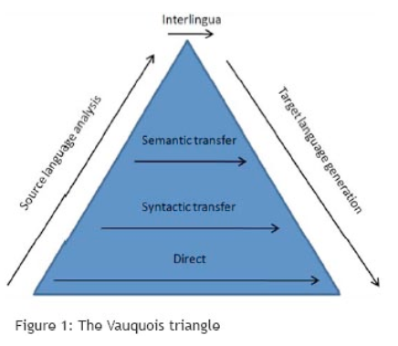
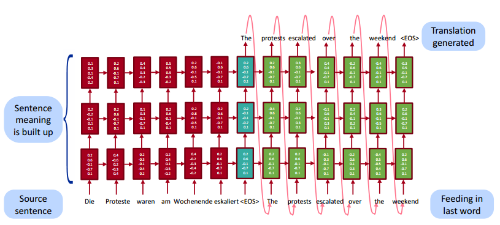

Natural Language Processing With Deep Learning
CS224n / Ling284
Christopher Manning and Richard Socher
Lecture 1: Introduction
Lecture Plan
-
What is Natural Language Processing？
-
What is Deep Learning?
-
Course logistics
-
Why is language understanding difficult?
-
Intro to the application of Deep Learning to NLP
1. What is Natural Language Processing (NLP)?
Natural Language Processing is a field at the intersction of
- computer science
- artifical intelligence
- and linguistics
Goal: for computers to process or "understand" natural language in order to perform tasks that are useful,e.g.,
- Performing Tasks, like making appointments, buying things
- Qustion Answering
- Siri,Google Assistant,Facebook M,Cortana...thank you,mobile!!!
Fully understanding and representing the meaning of language(or even defining it) is a difficult goal.
- Perfect language understanding is AI-complete
NLP Levels

(A tiny sample of) NLP Applications
Applications range from simple to complex:
- Spell checking,keyword search,finding synonyms
- Extracting information form websites such as
- product price,dates,location,people or company names
- Classify: reading level of school texts,positive/negative sentiment of longer documents
- Machine translation
- Spoken dialog systems
- Complex question answering
NLP in industry ... is taking off
- Search (written and spoken)
- Online adventisement matching
- Automated / Assisted translation
- Sentiment analysis for marketing or finance/trading
- Speech recognition
- Chatbots / Dialog agents
- Automating customer supoort
- Controlling devices
- Ordering goods
What's special about human language
A human language is a system spcifically constructed to convey the speaker/writers meaning
- Not just an environmental signal,it's a deliberate communication
- Using an encoding which little kids can quickly learn(amazingly!)
A human language is a discrete/symbolic/categorical signaling system
- rokect violin
- with very minor exceptions for expressive signaling ("I loooove it." "Whooomppaaa")
- presumably because of greater signaling reliability
- symbols are not just an invention of logic /classical AI!
the categorical symbols of a language can be encoded as a signal for communication in several ways:
- sound
- gesture
- images(writing)
- the symbols is invarient across different encodings! 
- a human language is a symolic/categorical signaling system
- however,a brain encoding appears to be a continuous pattern of activation,and the symbols are transmitted vua continuous signals of sounds/vision
- We will explore a continuous encoding pattern of thought
- the large vocabulary, symbolic encoding of words creates a problem for machine learning - sparsity! 
2. What's Deep Learning(DL)?
Deep Learning is a subfield of machine learning
most machine Learning methods work well because of human-designed representations and input features
- for example:features for finding named entities like locations or organization names(Finkel et al.,2010)
- machine learning becomes just optimizing weights to best make a final prediction
machine learning vs deep learning

-
Representation learning attempts to automatically learn good features or representations
-
Deep Learning algorithms attempts to learn(multiple levels of) representation and an output
-
From "raw" inputs x (e.g.,sound,characters,or words)

On the history of and term "Deep Learning"
- We will focus on different kinds of neural networks
- The dominant model family inside deep learning
- Only clever terminology fot sy
Representations of NLP Levels: Semantics
NLP Applications: Sentiment Analysis
Qustion Answering
Dialog agents/Response Generation - A simple, successful example is the auto-replies available in the Google Inbox app - A application of the powerful, general technique of Neural Language Models, which are an instance of Recurrent Neural Networks

Neural Machine Translation - Many levels of translation have been tried in the past:

- Traditional MT systems are very large complex systems
- What do you think is the interlingua for the DL approach to translation?
- Source sentence is mapped to a vector ,then output sentence generated [Sutskever et al. 2014, Bahdanau et al. 2014, Luong and Manning 2016]
 Now live for some languages in Google Translate(etc.),with big error reductions!
Conclusion: Representation for all levels? Vectors
-
We will study in the next lecture how we can learn vector representations for words and what they actually represent
-
Next week: how neural networks work and how they can use these vectors for all NLP levels and many different applications